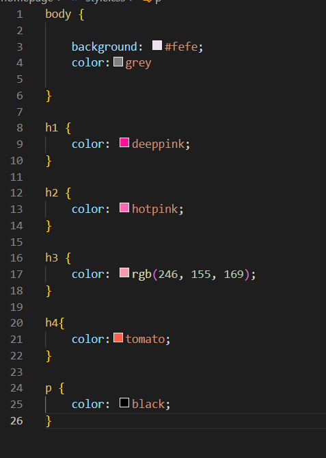
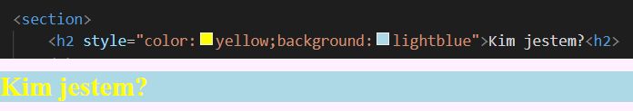
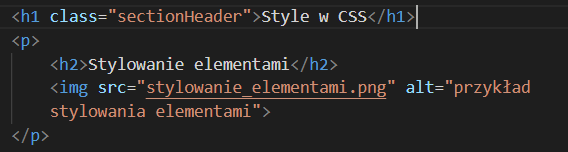
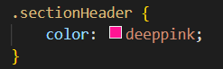
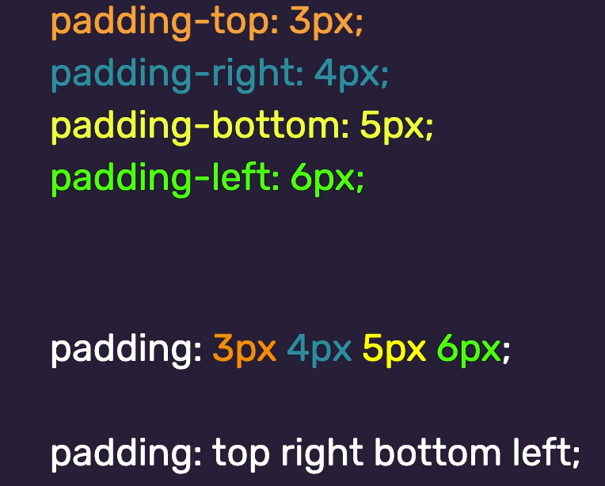
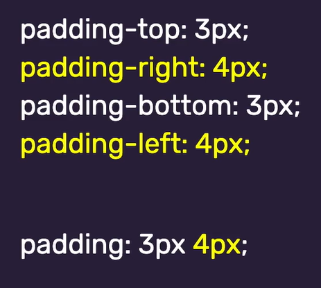
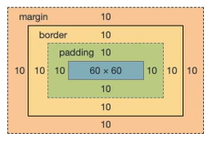
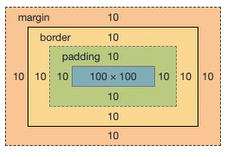

Przydatne skróty klawiszowe
ctr + shift + P -> wysuwa pasek gdzie klikasz "format document"
ctr + shift + P -> wysuwa pasek gdzie klikasz "format document"
em lub i - robią kursywę
strong lub b - pogrubiają
a href - link do hiperłącza
id - identyfikator, przydaje się do nawigacji w obrębie stronki
img src="tutaj nazwa" alt="opis zdjecia dla osob niewidomych"
Disclaimer: jeśli masz zdjęcia w innym folderze to załączasz ścieżke np img src = "./podfolder/nazwa foty"

Pierwsze są w nawiasie bo lepiej ich nie stosować
W przypadku gdy mamy dwa znaczniki o tej samej wadze czyli np chcemy na jeden kolor wystylizować body h1
(czyli wszystkie h1 obecne w body których jest np 3) oraz section h1 (których jest 5) wygrywa większa
ilość wystąpień i ten kolor będzie widoczny a drugi w opcji "zbadaj" będzie widoczny jako
przekreślony
Poniżej przykład jak zbadać ile jest wystąpień i na którym miejscu w hierarchi. Jeśli
remis jest i w wadze i w ilości wystąpień to wygrywa ten którego styl jest bliżej w kodzie w pliku CSS


Nie jest to jednak dobra praktyka bo w razie potrzeby zmiany trzeba przejrzeć cały dokument i
szukać
tych nagłówków
Stylowanie w klasie to najlepsza praktyka
W HTML

W CSS

Można też robić to po ID ale wtedy nie .nazwaklasy tylko #nazwaID ale to nie jest dobra praktyka
W ten sposób można dwa nagłówki typu h1 wystylować zupełnie inaczej, niezależnie od siebie
lub np nadać sekcji pamiętniczek inne tło niż całej reszcie strony
Tymi parametrami można manipulować tylko jeśli strona ma display=block (nie działa na inline, chyba działa na block-inline)
max-width i min-width -> określają rozmiar powyżej/poniżej którego dana sekcja nie zmieni już
bardziej swojego rozmiaru, niezależnie od tego jak zmniejszymy okno
width -> ustawiona na sztywno sprawi, że sekcja zawsze będzie miała taką samą szerokość nie zależnie
od rozmiaru okna
width/height x% -> 100% sprawi, że sekcja będzie się dostosowywać tak aby wypełnić całą dostępną w rozmiarze
Disclaimer: ten procent jest brany z tego co jest wyżej. Jeśli w main jest 50% a w sekcji też damy 50% to rozmiar sekcji to połowa z 50 czyli 25%
width x vw -> różni się tym od tego width x%, że tutaj nie będzie trzeba brać pod uwagę tego co jest wyżej. width=50vw to połowa dostępnego rozmiaru okna i tyle. Nie ma filozofii i wpływu innych rzeczy.
height x vw -> tekst pojawi się w miejscu zależnym od rozmiaru okna. Jeśli ustawimy, że trzeba przeskrolować całą długość okna to nieważne jak zwiększymy okno wciąż będzie trzeba je całe przescrollować
Disclaimer: można tego używać również w font-size i mamy czcionke która zwiększa się w zaleśności od strony
okna przestrzeń, jednakże nie przekroczy min i max width
height-> lepiej tym parametrem nie ruszać, ale istnieje taka możliwość
overflow:scroll ->sam overflow robi, że tekst jeśli jest dłuższy niż zadana wysokość, będzie się ucinał po przekroczeniu tej wysokości. Gdyby nie overflow nachodziłby na następne rzeczy poniżej. Overflow scroll natomiast sprawia, że jeśli tekst nie mieści się w wyznaczonej sekcji pojawia się scroll i możemy przewijać w obrębie tego tekstu.
Tworzy ramkę dookoła
border: 3px nazwa_stylu (np solid to zwykła, dashed to przerywane kreseczki, dotted to kropeczki) #kolor
Można też każda z tych wartości definiować osobno np border-width: , border-style: , border-color:
A nawet border-bottom: , border-top: itp jeśli chcemy np oddzielić tekst tylko od góry, dołu czy boku
border-radious: ilosc_pikseli px albo % okresla zaokrąglenie rogów ramki


Zamiast paddingu można użyć funkcji margin, ona też odsuwa od krawędzi ale w przeciwieństwie do paddingu nie liczy się nigdy w rozmiar. Aby wyśrodkować coś na stronie można zrobić margin:auto, który nawet zmniejsza się jak zmniejsza się stronę
Border-box - Wszystko aż do border ma sumarycznie stały rozmiar. Zwiększenie borderu lub paddingu zmniejszy rozmiar contentu.
Np : element o rozmiarze width: 100px i height:100px po dodaniu paddingu, border i margin (kazdy po 10px)bedzie mieć już tylko 60px (margin znajduje się poza border więc się nie wlicza)
Toteż 10 border + 10 padding + 60 text + 10 padding + 10 border = 100px całość a 60px content

Content-box - Rozmiar kontentu jest stały a border i padding zwiększają rozmiar elementu..
Toteż 10+10+100+10+10=140px ekement a 100px kontent

position:absolute i relative - coś o absolutnej pozycji może nachodzić na inne elementy. Relativ służy do określenia w pozycji startowej od której będziemy odejmować lub dodawać dla tego elementu o pozycji absolutnej. Można tym elementem wyjechać ustawiając parametry takie jak bottom, right itp na ujemne wartości pixeli.
position:fixed - sprawia, że relativem staje się okno czyli w miare scrollowania ten element jest cały czas na tej samej pozycji np:jakaś głupia reklama do scancelowania
position:sticky - na początku zachowuje się jakby miało pozycje absolutną, ale po dotarciu do rogu ekranu jest fixed
float - można użyć aby tekst okalał jakiś obrazek
to co ma wartość z-index o większej wartości jest bardziej na wierzchu w przypadku gdy dwa elementy na siebie nachodzą